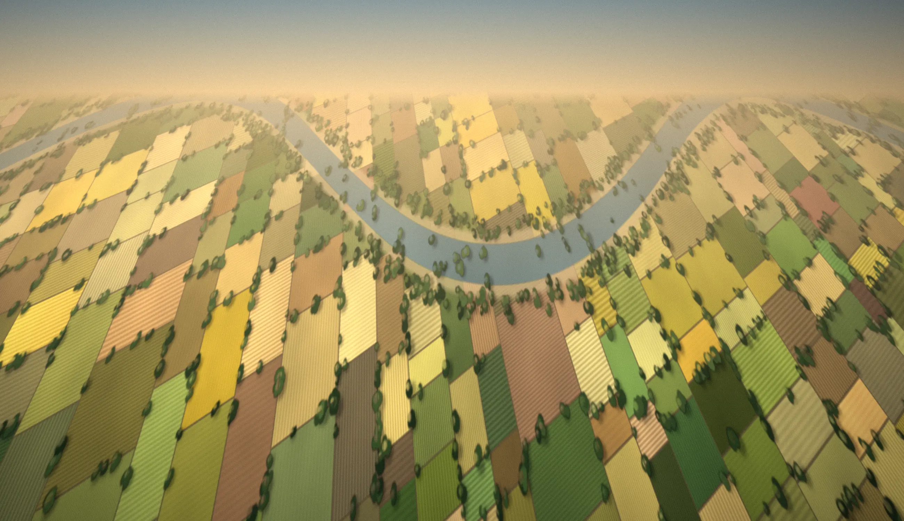

Since 1993
30+ Years of field understanding
Strategies are stronger when they’re informed by real markets, real communities and real behaviour.
Three decades of work in villages, haats, farms and households. It shapes every recommendation we make.